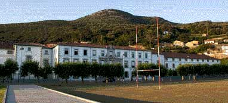
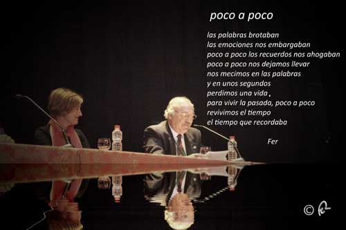
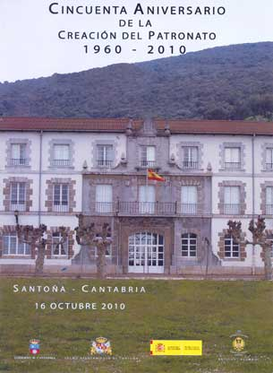

SANTOÑA EN EL CORAZÓN
Celebración del Cincuentenario
| |
Entre bastidores |
Encuentros |
El Liceo |
En el Patronato |
El Lunch |
Haciendo tiempo |
La Cena |
Bienvenidos al día después... |
Abandonamos Santoña en un domingo gris, lluvioso, como no podía ser de otra manera... Buscabamos con la mirada a algún compañero con quien compartir los recuerdos de la noche anterior. La mirada se perdía y el tiempo apremiaba a emprender el regreso a nuestros destinos. Por fin uno a quien poder darle un abrazo en el que se concentraban todos los abrazos que quisieramos haber dado y, por imposible, no pudimos hacerlo. 'Tenemos que repetirlo', nos decíamos uno a otro... Un nuevo compañero aparecía en escena.... 'Buen viaje y tendremos que repetirlo, esto no puede quedar así....' Una compañera, con lágrimas en los ojos, nos hace ponernos tiernos. La sigue otra más con el pañuelo preparado en las manos... Me abraza y me da las gracias... Creo que si, esto hay que repetirlo, me digo para mi... |
HACE 50 AÑOS... (Vídeo proyectado en el Teatro Liceo)
| Audios del acto en el Liceo | ||
|
|
||

